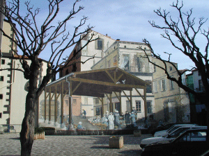
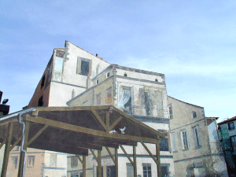

A Aubière, village vigneron
d'autrefois, les murs dévoilés par la
destruction de maisons vétustes sont magnifiquement
décorés. L'image des marchés
d'autrefois accompagne les marchés d'aujourd'hui le
dimanche matin.
Projet réalisé en 1987 sur la Place
de l'Eglise.
|

|


|

|
|